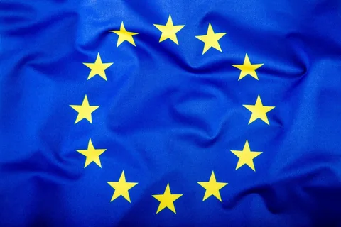

-
География
-
Государства-члены
-
История
-
Экономика
-
Население
Оглавление:
-
Европе́йский сою́з (Евросою́з, ЕС) — экономическое и политическое объединение 27 европейских государств.
Европейский союз  был создан Маастрихтским договором 7 февраля 1992 года, вступившим в силу 1 ноября 1993 года, на основе Европейского экономического сообщества и нацелен на региональную интеграцию.
Толчком к долго планировавшемуся созданию союза послужил развал СССР[источник не указан 19 дней] и последовавшее за этим исчезновение социалистической экономической системы, долгие годы конкурировавшей с западной капиталистической, а также новые рынки сбыта, образовавшиеся на территории обедневших стран бывшего соцблока.
Европейский союз — международное образование, сочетающее признаки международной организации (межгосударственности) и государства (надгосударственности), однако юридически он не является ни тем, ни другим.
С помощью стандартизированной системы законов, действующих во всех странах союза, был создан общий рынок, гарантирующий свободное передвижение (движение) людей, товаров, капитала и услуг, включая отмену паспортного контроля в пределах Шенгенской зоны, в которую входят как страны-члены, так и другие европейские государства.
Будучи субъектом международного публичного права, Европейский союз имеет полномочия на участие в международных отношениях и заключение международных договоров. Сформирована общая внешняя политика и политика безопасности, предусматривающая проведение согласованной внешней и оборонной политики. По всему миру учреждены постоянные дипломатические миссии ЕС, действуют представительства в Организации Объединённых Наций, ВТО, Большой семёрке и Группе двадцати. Делегации ЕС возглавляются послами ЕС.
Институты ЕС включают в себя Европейский совет, Европейскую комиссию (правительство), Совет Европейского союза (официальное название — Совет, упоминается также как Совет министров), Суд Европейского союза, Европейскую счётную палату, Европейский центральный банк и Европейский парламент. Европейский парламент избирается каждые пять лет гражданами ЕС.
Союз принимает законодательные акты (директивы, законы и постановления) в сфере правосудия и внутренних дел, а также вырабатывает общую политику в области торговли, сельского хозяйства, рыболовства[16] и регионального развития.
С 448 миллионами жителей, населяющих страны Европейского союза, доля ЕС как целого в мировом валовом внутреннем продукте (ВВП) составляла в 2018 году около 23 % (21,6 трлн $) по паритету покупательной способности и около 19 % (16,1 трлн $) — по номинальному значению.
20 стран Европейского союза ввели в обращение единую валюту — евро, образовав европейский экономический союз — еврозону.
В 2012 году Европейскому союзу присуждена Нобелевская премия мира. В 2017 году ЕС присуждена Премия принцессы Астурийской.
-
География
Страны-члены Европейского союза занимают 4 233 262 км2. Самая высокая точка — гора Монблан в Грайских Альпах (4810 м). Самой низшей точкой ЕС является Ламме-фьорд в Дании (7 м ниже уровня моря).
В состав ЕС также входят французские заморские территории и испанские полуанклавы Сеута и Мелилья, находящиеся за пределами Европы.
Через территорию ЕС проходит несколько типов климата — от арктического (Северо-Восточная Европа) до тропического (Французская Гвиана). Большинство населения проживает в районах с умеренным морским, средиземноморским или гемибореальным климатами.
-
Государства-члены
На 2021 год в состав ЕС входят 27 государств: Германия, Бельгия, Италия, Люксембург, Нидерланды, Франция, Дания, Ирландия, Греция, Испания, Португалия, Австрия, Финляндия, Швеция, Венгрия, Кипр, Латвия, Литва, Польша, Мальта, Словакия, Словения, Чехия, Эстония, Болгария, Румыния, Хорватия.
-
История
1951 — подписание Парижского договора о создании Европейского объединения угля и стали. 1957 — подписание Римского договора о создании Европейского экономического сообщества и Евратома. 1965 — подписание договора о слиянии, в результате которого был создан единый Совет и единая Комиссия для трёх европейских сообществ ЕОУС, ЕЭС и Евратома. Вступил в силу с 1 июля 1967 года. 1973 — первое расширение ЕЭС (присоединились Дания, Ирландия, Великобритания). 1978 — создание Европейской валютной системы. 1979 — первые общеевропейские выборы в Европейский парламент. 1981 — второе расширение ЕЭС (присоединилась Греция). 1985 — подписание Шенгенского соглашения. 1986 — третье расширение ЕЭС (присоединились Испания и Португалия). 1986 — Единый европейский акт — первое существенное изменение учредительных договоров ЕС. 1992 — подписание Маастрихтского договора о создании Европейского союза на основе Европейского экономического сообщества. 1995 — четвёртое расширение (присоединение Австрии, Финляндии и Швеции). 1999 — введение единой европейской валюты — евро (в наличном обращении с 2002 года). 2004 — пятое расширение (присоединение Чехии, Венгрии, Польши, Словакии, Словении, Эстонии, Латвии, Литвы, Кипра, Мальты). 2007 — подписание Договора о реформе в Лиссабоне. 2007 — вторая волна пятого расширения (присоединение Болгарии и Румынии). Отмечается 50-летний юбилей создания ЕЭС. 2013 — шестое расширение (присоединилась Хорватия). 2020 — выход Великобритании из союза. -
Экономика
-
Внутренний рынок
Свобода движения капитала подразумевает не только возможность беспрепятственных платежей и переводов через границы, но и покупку недвижимости, акций компаний и инвестирование между странами. До принятия решения о формировании экономического и валютного союза развитие положений о свободе капитала шло медленно. По принятии Маастрихтского договора Европейский суд начал ускоренно формировать решения в отношении ранее пренебрегаемой свободы. Свобода перемещения капитала действует также и на отношения между странами — участниками ЕС и третьими странами.
-
Конкуренция
Евросоюз разрабатывает и контролирует исполнение антимонопольного законодательства для обеспечения на внутреннем рынке свободной конкуренции. Комиссия, являясь регулирующим органом в вопросах конкуренции, отвечает за антимонопольные вопросы, контроль слияний и поглощений предприятий, разделение картелей, поддержку экономического либерализма и контроль за оказанием государственной помощи.
-
Валютный союз
Принципы, регулирующие валютный союз, были заложены уже в Римском договоре 1957 года, а официальной целью валютный союз стал в 1969 году на саммите в Гааге. Однако лишь с принятием Маастрихтского договора в 1993 году страны союза были юридически обязаны создать валютный союз не позднее 1 января 1999 года. В этот день евро был представлен мировым финансовым рынкам в качестве расчётной валюты одиннадцатью из пятнадцати на тот момент стран союза, а 1 января 2002 года были введены в наличное обращение банкноты и монеты в двенадцати странах, входящих к этому моменту в еврозону. Евро заменил европейскую валютную единицу (ЭКЮ), которая использовалась в европейской валютной системе с 1979 по 1998 годы, в соотношении 1:1. На данный момент в еврозону входят 20 стран.
-
-
Население
По данным на 2024 год население ЕС составляет 449,2 млн человек.
-
")
Языки
Официальные языки Европейского союза
В европейских институтах официально равноправно используются 24 языка: английский, болгарский, венгерский, греческий, датский, ирландский, испанский, итальянский, латышский, литовский, мальтийский, немецкий, нидерландский, польский, португальский, румынский, словацкий, словенский, финский, французский, хорватский, чешский, шведский, эстонский. На рабочем уровне, как правило, используются английский, немецкий и французский. В шести государствах ЕС большинство населения составляют славяне: Болгария, Хорватия, Чехия, Польша, Словакия и Словения. -
Религии
Доля населения ЕС, верующего в Бога, по странам (по результатам опроса 2005 года) По данным официального опроса Европейского союза 18 % населения ЕС не верят в Бога, 27 % допускают существование сверхъестественной «духовной жизненной силы», в то время как 52 % верят в конкретного (личного) Бога. Большинство государств ЕС являются светскими. По участию государства в финансировании религиозных организаций выделяются следующие группы стран-членов ЕС (данные на 2015 год): Нет постоянного государственного финансирования религиозных организаций — Ирландия, Латвия, Литва, Португалия, Словения, Франция, Эстония; Страны, в которых основные религиозные организации финансируются главным образом за счёт государства — Бельгия, Греция, Дания, Люксембург, Словакия, Чехия. Страны, религиозные организации в которых существуют за счёт налоговых отчислений верующих — Венгрия, Италия, Испания и Польша (с 2015 года). Страны, в которых граждане на содержание своих религиозных общин платят особый церковный налог — Австрия, Германия, Швеция и Финляндия. Во всех странах-членах ЕС (включая светские) существуют следующие формы государственного финансирования религиозных организаций: Пастырская служба в армии, государственных больницах и тюрьмах; Финансирование принадлежащих религиозным организациям школ. Государство оплачивает персонал и дидактические материалы вне зависимости от учебного предмета; Ремонт за счёт государства (или местного самоуправления) церковных объектов — памятников культуры; Оплата религиозного образования в государственных и муниципальных школах. В 8 странах ЕС религиозное образование обязательно в общественных школах, в 2 странах (Франция и Словения) его нет, а во всех остальных странах-членах ЕС оно факультативно. В ряде стран ЕС в качестве альтернативы религиозному образованию предлагается светский курс этики; Налоговые льготы религиозным организациям обязательны во всех странах ЕС. В шести странах налоговые льготы распространяются также и на церковную экономическую деятельность. Церковная недвижимость, как правило, освобождена от налога. Религиозные благотворительные организации имеют право на финансовую помощь наравне со светскими благотворительными организациями. Города Европейского союза.
-
В соответствии с определением ОЭСР, в Европейском союзе существует 811 городов с населением более 50 тысяч человек, вместе с городами вышедшей Великобритании. В 5 городах — Афинах, Париже, Риме, Мадриде и Берлине — численность населения более 2 млн чел. 11 городов, в которых живёт более 1 млн человек: Кёльн, Прага, София, Милан, Мюнхен, Барселона, Будапешт, Бухарест, Варшава, Гамбург и Вена.
-